📚 Section 1 · The Journey on the Screen: Content and Context
The deck follows the film’s emotional thermometer. It starts in the warm green light of the Shire and ends on a cold river in shadow, and between those two points every scene earns its place with a two-part structure: a Core Insight, which names the idea, and a Cinematic Context, which shows how the camera delivers it. It should be noted that this structure is itself a lesson — the skeleton of almost every good film review, essay, or presentation in English. The core insight states the claim in one dense sentence; the cinematic context supplies the evidence from craft: lenses, light, movement, and sound.
The story the deck traces is familiar, and that familiarity is the point. A small, peaceful creature inherits an object of enormous power and must carry it away from everything he loves. Along the road the deck collects observations about power, friendship, geography, and grief — and each observation arrives wrapped in precise, reusable English. The journey below follows the deck stop by stop, quote by quote, with the practical lessons a learner can extract from each stop.
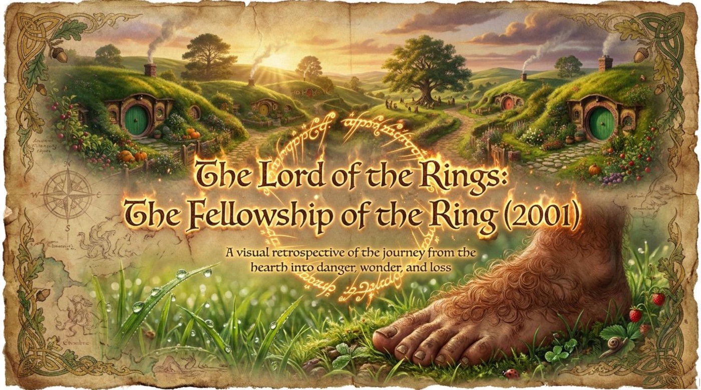
The Prologue: A Weapon That Reads Its Owner
The deck opens in fire, and its first core insight reframes everything that follows: “The Ring does not command everyone equally; it reveals, amplifies, and isolates. It exploits what a person is already tempted to desire.” That sentence describes the Ring as less a leash than a mirror. It does not plant new cravings; it finds the craving already sitting inside a person and quietly agrees with it. A general hungry for victory, a steward desperate to save his city, a scholar who adores order — each of them hears the Ring speaking in his own voice.
“Director Peter Jackson condenses Tolkien’s seven-year siege into a single visceral battle, establishing a baseline of high-fantasy action before dialing back to rural quiet. Isildur’s fateful choice to keep the weapon forged for conquest proves that physical strength is no defense against spiritual corruption.”
Notice that the deck’s proof arrives through a person, not an argument. Isildur is the strongest body on the battlefield, and he still loses — to a whisper inside his own heart. The deck’s verb choice deserves attention as well: reveals, amplifies, isolates is a three-beat pattern that lands like a drumroll, and learners can copy it for any kind of analysis.
Build a triad of your own about any topic you know well — for example, “a good notebook collects, connects, and calms.” Three present-tense verbs, each one shorter than a full clause, give your English the same analytical ring as the deck’s prose.
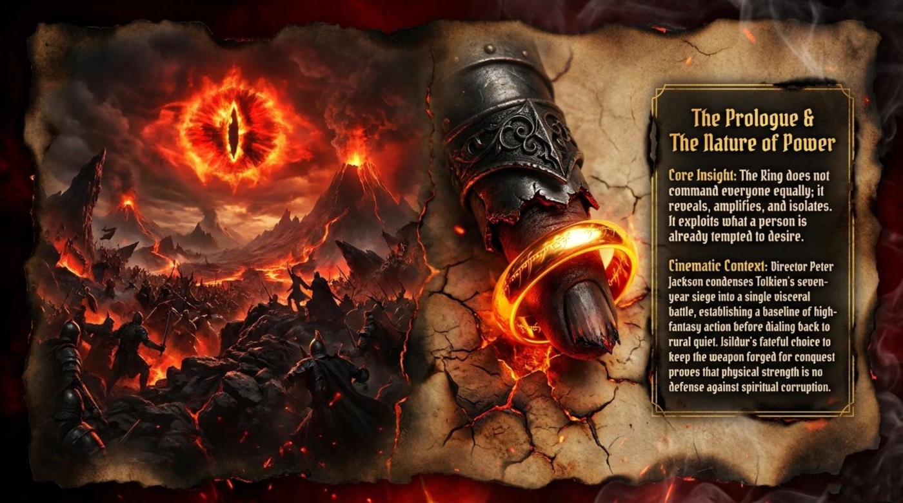
The Shire: Simple Desires, Strange Armor
From the scorched battlefield the film, and the deck, dial back to rural quiet. The core insight states: “The Shire is devoid of imperial ambition. Because hobbits desire only simple things—gardens, food, gossip—they are uniquely resilient to a weapon forged for total domination.” It is a lovely inversion: the smallest people in the world carry the strongest natural armor, precisely because they want so little. The Ring searches a hobbit’s heart and finds berry jam, seed catalogs, and a bit of neighborhood news — nothing it can work with.
“The absence of imperial ambition allows Bilbo to keep the ring for decades without the enemy finding him.”
The deck reinforces the thesis with Bilbo’s case: decades of safekeeping, simply because his heart never aimed at empire. The same section also sneaks in a craft lesson. Its diagram of Frodo and Gandalf illustrates forced perspective, the technique that makes a hobbit look half a wizard’s height, and a motion-control rig repeats the camera’s path so the illusion survives movement. The film lies about size honestly — with geometry instead of tricks of scale that collapse under motion.
Describe your own “Shire” in a list of three simple nouns, the way the deck does — gardens, food, gossip. Concrete nouns are the fastest vocabulary to activate, and the sentence pattern “Because they desire only X, they are resilient to Y” transfers to almost any argument you will ever make.
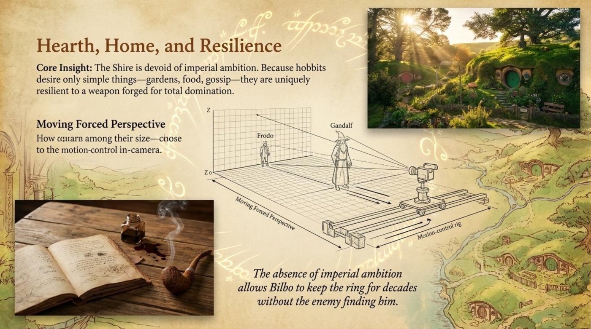
The First Shadow: The Burden Finds Small Hands
The warmth lasts exactly until Gandalf throws the Ring into his fireplace at Bag End. The core insight is short and heavy: “The burden of the world falls onto small hands without asking if they are ready.” No committee selects Frodo; no one checks his qualifications. Responsibility in this story simply lands, the way weather lands, and the drama comes from watching small hands decide what to do with it.
“The revelation of the Ring’s fiery Tengwar inscription marks the exact moment the film’s ‘Digital Intermediate’ (DI) color grading darkens. The transition is complete: the pastoral peace is over, replaced by the crushing weight of deep shadow.”
The cinematic context dates the change to a single frame: the moment the Tengwar letters glow in the coals, the film’s Digital Intermediate grading shifts and never shifts back. Pay attention to how the deck writes about light: pastoral peace against crushing weight of deep shadow. English loves describing mood through color and weight, and this sentence is a master key to that habit.
The lesson for learners hides in the word burden. A burden is not chosen, and it is not light — the same word names both a load carried and a duty endured. Every serious text about responsibility in English reaches for this metaphor: burdens are shouldered, shared, lifted, or, in Frodo’s case, inherited.
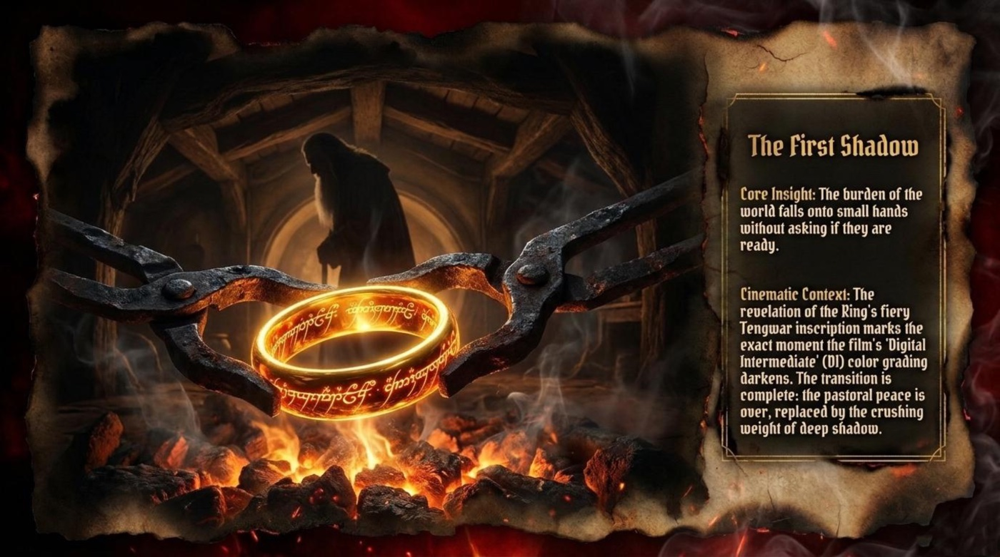
Bree and the Lie Called Escape
On the road to Bree the deck states its sharpest warning: “The Ring’s promise of evasion is a lie. Putting it on does not provide escape; it drags the wearer into the wraith-world, exposing them directly to the Eye of Sauron.” The object of safety is the object of danger. Frodo slips the Ring on to vanish from his hunters, and vanishing is exactly the problem — in the grey wraith-world, he stands in plain sight of the Eye of Sauron.
“Peter Jackson’s DNA from low-budget horror bleeds into the cinematography here. Aggressive tracking shots strip away the high-fantasy gloss, grounding the pursuit in mud, terror, and physical vulnerability.” The deck explains that the director’s early horror films never quite leave his camera: the Black Riders chase the hobbits the way a monster chases teenagers — close, fast, and at boot level. It is worth remembering that vulnerability is one of the most useful abstract nouns in English: it names the state every chase scene, and every language learner, lives in.
Interestingly, the Ring’s false promise has a twin in language learning: the false friend. A word that looks familiar — like English actual for a reader expecting current — offers easy escape and quietly delivers the opposite. The deck’s sentence structure “the promise of X is a lie; X does not provide escape, it drags the wearer into…” is a reusable frame for any warning, from bad study habits to bad translations.
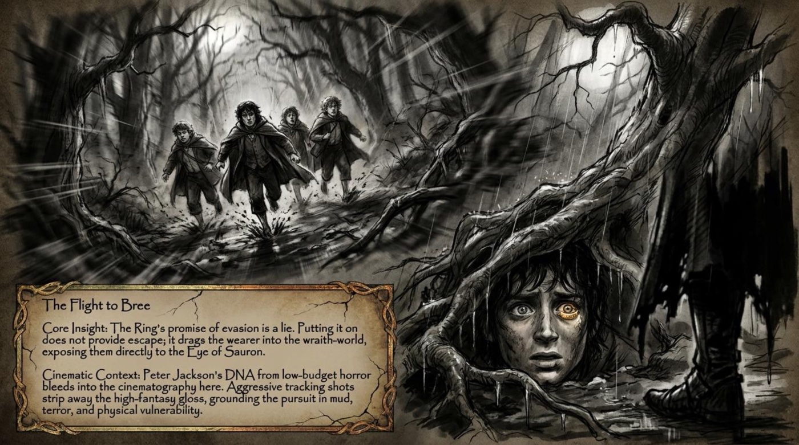
Rivendell: Healing, Not Erasure
Rivendell arrives like an exhalation. The core insight draws its boundary carefully: “Rivendell offers healing, but not absolute restoration. Frodo’s physical scarring from the Morgul blade establishes that some wounds will never fully fade, while the broken sword Narsil symbolizes the fractured lineage Aragorn must decide to carry.” The haven is real, and it is limited. The Morgul blade leaves a scar that no elf-song fully closes, and the shattered Narsil stays broken on its plinth — an inheritance waiting for someone brave enough to claim it.
“The cinematography deliberately pushes exposure to suggest an otherworldly, ethereal quality, creating a stark contrast to the gritty mud of Bree and the impending darkness of Moria.”
The deck reads the valley’s light as language: overexposed, bleached, luminous — the visual grammar of a place outside ordinary time. It is worth noting the contrast pair the deck builds: ethereal against gritty, otherworldly against mud. Learners can lift the whole pattern — one airy adjective, one earthy adjective, a sentence that holds both.
Practice the concession structure the deck models: “X offers healing, but not absolute restoration.” It lets you praise something and set its limits in one breath — a structure that makes your English sound measured rather than swept along.
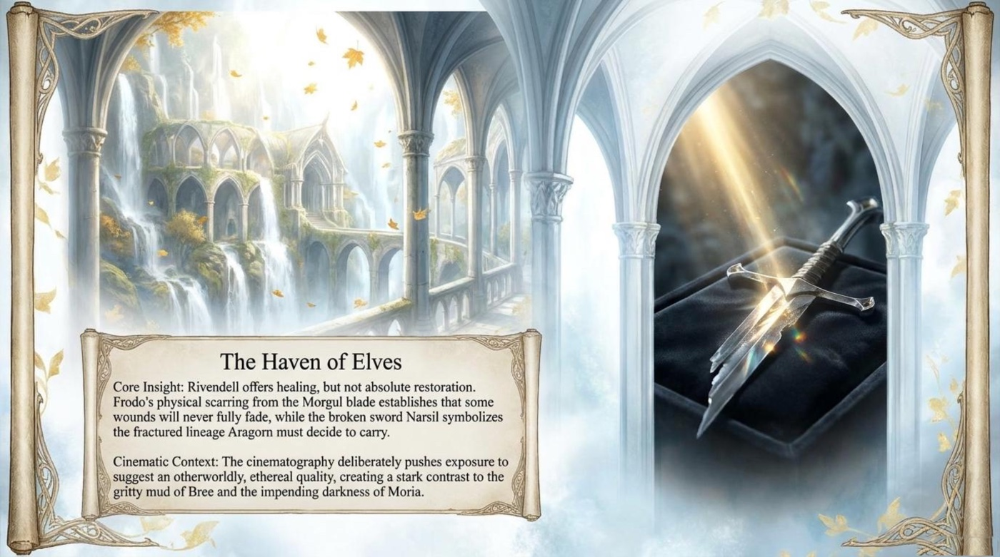
The Architecture of Temptation: Four Desires, Four Doors
The deck’s central table deserves slow reading, because it maps the same object onto four different hearts. Each character gets a vector of corruption — the door the Ring uses — and an outcome or defense. The rows read like short studies in human motivation.
Saruman — Knowledge / Order: “Transforms his wisdom into a justification to join the winning side, clearing forests to build war machines.” Intelligence becomes logistics; the wisest head in the story simply audits both armies and signs with the stronger one.
Boromir — Patriotism / Desperation: “Desires the Ring not out of malice, but out of a fractured, desperate love for his dying people in Gondor.” The deck is careful to clear him of cruelty — his temptation is love, bent slightly out of shape.
Galadriel — Wisdom / Benevolence: “Envisions a reign that is beautiful and terrible, ultimately recognizing that to save the world, the time of the Elves must end.” Her test is the strangest: the Ring offers her exactly what she would use well, and she refuses it anyway.
Frodo — Humility: “Resists by claiming no grand vision for Middle-earth; his singular, anchoring desire is simply that the Shire remains the Shire.” The pattern completes itself here — the Ring finds nothing imperial to amplify, so the humblest heart in the fellowship holds out longest.
Steal the sentence frame “not out of malice, but out of a desperate love for…” The construction not out of X, but out of Y is the cleanest way in English to re-motivate someone’s action — and to show you understand the difference between cruelty and desperation.
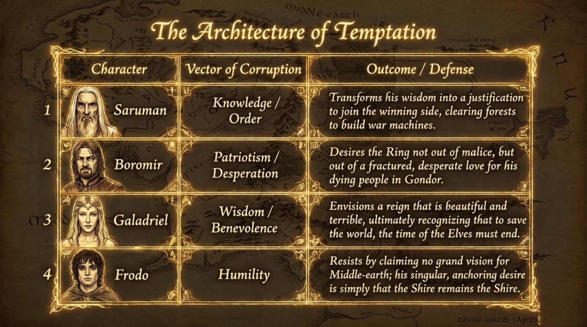
Small Figures, Immense World
Once the fellowship walks, the deck turns to scale. The core insight states: “The alliance is incredibly fragile. Jackson’s heavy use of the Extreme Long Shot is not just for scenic beauty; it visualizes the sheer discrepancy in size between the characters and the malice of the world they walk through.” The Extreme Long Shot turns nine friends into a thin ink line on a mountain ridge — and the thinness is the argument. The deck even annotates it like a diagram: the walkers’ pixel footprint measured against the height of the pass, a labeled 2.2 meters against cliffs that swallow the number.
The word fragile earns its place here. It describes porcelain, glass, treaties, and truces — anything that survives only while nobody breathes too hard. The deck’s claim is that fellowship itself is such an object: nine people, one quarrel, and the whole expedition shatters. It should be noted that this is also why the film invests so much time in small scenes of cooking, arguing, and singing; the audience must believe in the porcelain before watching it tremble.
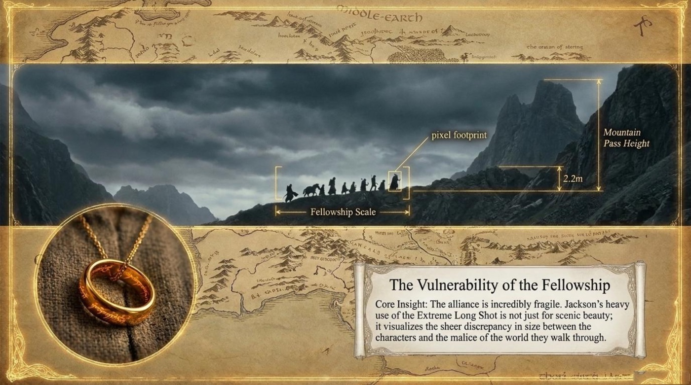
The Mountain: Geography Against Willpower
The first great obstacle is not an army but a weather system. The core insight reads: “Pushed off the surface by Saruman’s wrath, the Fellowship is forced underground. The mountain is an impassable wall, proving that willpower alone cannot overcome Middle-earth’s raw, ancient geography.” The wizard Caradhras simply refuses them — snow, wind, and a muttered spell from Isengard — until turning back or going under are the only options left.
“The sweeping aerial crane and helicopter shots predate the drone era, delivering a visceral sense of kinetic energy and high-stakes geographic isolation previously unseen in mainstream fantasy.”
The cinematic context honors the craft: long before consumer drones, the crew flew real helicopters through real mountain air, and the audience feels the wind because the camera did. It is worth noting the collocations the deck builds around effort: willpower alone, an impassable wall, forced underground. English describes losing to nature with the same verbs it uses for losing to an enemy — a small vocabulary family that instantly upgrades travel writing.
The deeper lesson is humbling and practical at once. Motivation, the deck argues, is not omnipotent; it meets walls. Any honest plan — a study plan included — must route around the wall instead of shouting at it. The Fellowship’s answer is not more courage but a different door: Moria.
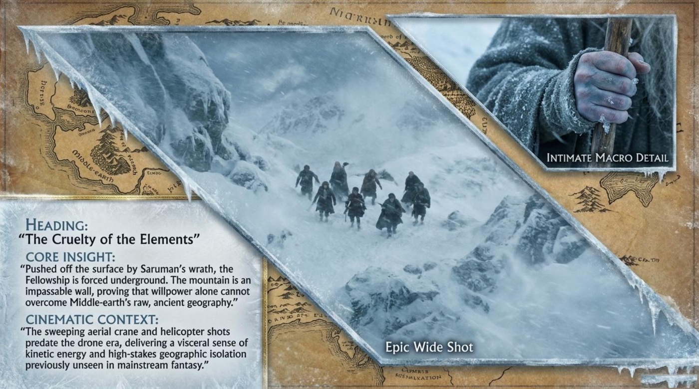
Moria: The Enemy Underfoot
Underground, the deck’s thesis sharpens: “In Moria, the environment itself becomes the enemy. The air is still, the stone deadens sound, and a single careless noise awakens an ancient demon.” No villain needs to appear for the horror to work; corridors, stale air, and a well do most of the damage. The verb deadens deserves a place in any learner’s notebook — stone that deadens sound is stone that absorbs it, and the same adjective family extends to deadening blows, deadening silence, and deadened nerves.
“The Balrog sequence is a lighting masterclass. The demon is essentially a ‘big flaming light source,’ and the digital integration casts authentic, terrifying rim-lighting across the physical environment and the actors’ faces.”
When the Balrog finally arrives, the deck reads it as a lamp: a huge flame whose light paints genuine rim-lighting onto the actors, gluing the digital monster to the physical set. Pay attention to the phrase lighting masterclass — English reaches for masterclass whenever craft reaches perfection, in kitchens, on pitches, and in editing rooms alike.
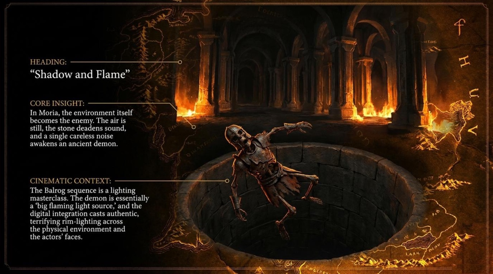
The Loss of the Guide
The bridge of Khazad-dûm breaks more than a wizard. The core insight states: “The emotional devastation of losing Gandalf forces a violent narrative pivot. The invisible protection the Fellowship relied upon collapses, and the paralyzing weight of leadership is instantly transferred to Aragorn. The mission is no longer guided by omniscient wisdom, but by stubborn survival.” The deck names the pivot precisely: the company’s map, compass, and conscience in one grey robe is gone, and the survivors must walk on without answers.
The sentence pattern here is worth its own citation: “no longer guided by omniscient wisdom, but by stubborn survival.” The construction no longer X, but Y marks a turning point in any story — and in any learner’s journey. Every student eventually loses the wizard: the teacher who knew all the paths, the textbook that contained all the answers. The road afterward runs on exactly what the deck names — stubborn survival, done daily, without guarantees.
Write one sentence about your own learning with the frame “My progress is no longer guided by …, but by …” Naming the shift honestly is the fastest way to stop waiting for a guide and start walking.
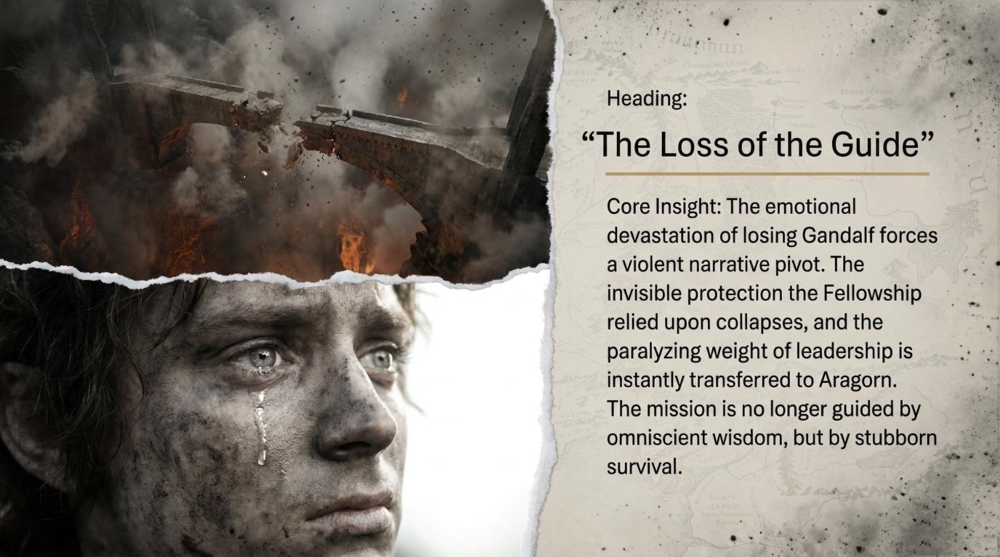
The Golden Wood: Gifts Sized to the Person
Grief delivers the company to Lothlórien, and the deck slows the clock there: “Lothlórien is a place that holds time still. The gifts given by Galadriel—light, soil, cloaks—are not mere fantasy tropes. They are intimately tied to the specific inner strength each character must rely upon in the coming darkness. Sam receives soil for a future garden; Frodo receives a contained star for the darkest hour.” The Lothlórien sequence turns gift-giving into characterization: what each person receives is what each person will need to become.
The deck’s rhetoric repays study. The dismissal “not mere fantasy tropes” sets up the correction “they are intimately tied to…” — a two-move structure that lets a writer reject a lazy reading and install a better one in the same breath. It is worth noting, too, the small phrase a contained star: two nouns, and the entire light of the Phial of Galadriel is captured for the darkest hour ahead. Learners can practice the same compression — one precise noun doing the work of a paragraph.
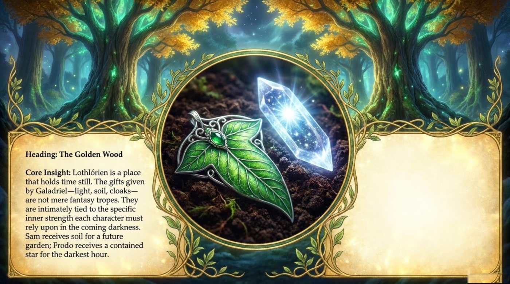
The Argonath and the Breaking
Two monuments end the journey — and the deck reads both as architecture speaking. The core insight on the river gate states: “The Argonath visually manifests the heavy, fading glory of the kingdoms of Men. Passing between them, Aragorn confronts the history he has avoided, while Boromir’s mind finally cracks under the pressure to save the crumbling kingdom those statues represent.” The same stone faces mean opposite things to the two Men: for the ranger, a throne he has spent decades refusing; for the steward’s son, a hospital he cannot fund with anything except a miracle.
“Frodo realizes that keeping his friends close exposes them to the Ring’s corruption. Boromir falls, redeeming his earlier failure by paying the ultimate price to protect the innocent.”
Then the porcelain shatters, and the deck records both halves of the fact. Boromir’s fall is followed by his redemption: arrows in the chest, a horn dead in his hand, a confession on his lips — and the deck calls it paying the ultimate price to protect the innocent. The second half belongs to Sam: “The Fellowship fails to cross Middle-earth as a single unit, but the bonds they forged endure. Sam plunging into the water proves that while the formal Fellowship is broken, unbreakable loyalty remains.” A hobbit who cannot swim wades into deep water for a friend, and the concession structure while the formal X is broken, unbreakable Y remains holds the whole ending in one sentence.
Retell this ending aloud in three sentences using the deck’s own architecture: one sentence with no longer … but …, one with not out of malice, but out of …, and one with while X is broken, Y remains. Three borrowed frames, and the most complicated plot twist in the film becomes your own fluent paragraph.
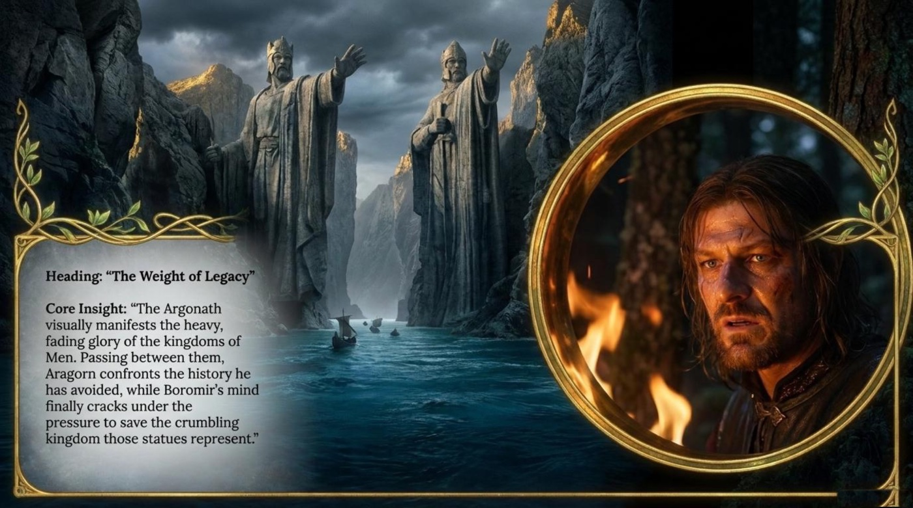
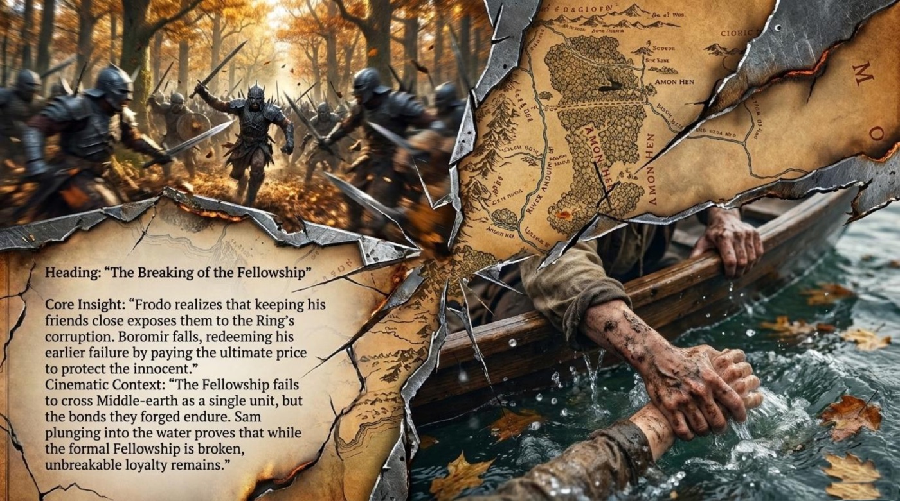